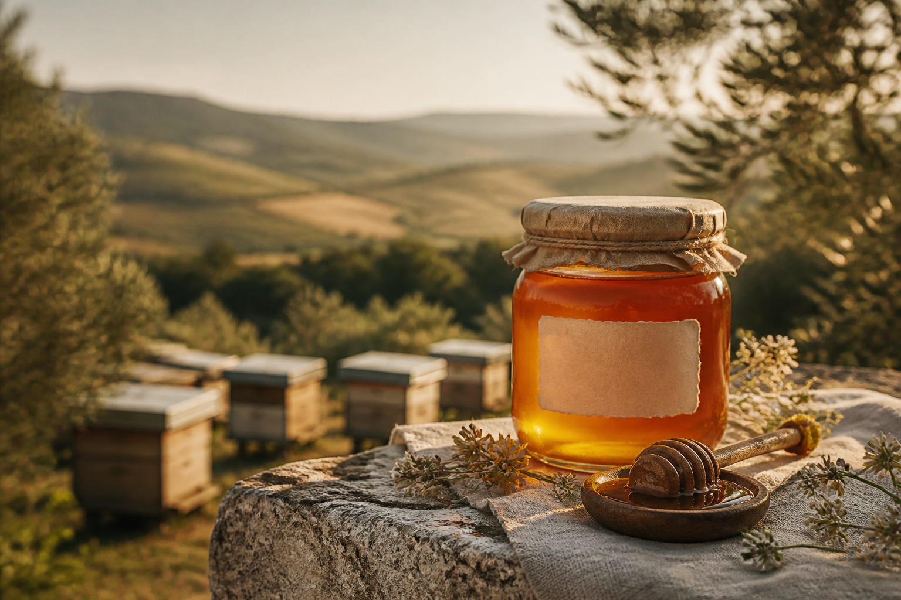

Miel de fleurs
Doux · Floral · Équilibré
PRIX ET VARIÉTÉ À CONFIRMER
Récolté à Medjez El Bab, Béja
Un miel tunisien produit par nos soins, au rythme des floraisons et dans le respect des abeilles.
DécouvrirDEPUIS 2024 · PRODUCTION LOCALE
Tout commence ici
Installée à Medjez El Bab, dans le gouvernorat de Béja, Miel Khadija est née d’une relation simple et patiente avec la nature.
Depuis deux années de production, nous suivons nos ruches, observons les saisons et récoltons un miel qui porte l’empreinte de notre région.
Texte provisoire à valider avec la responsable02 — La récolte
Chaque floraison raconte une saison. Cette sélection sert de base créative et sera corrigée après la réunion.
Doux · Floral · Équilibré
PRIX ET VARIÉTÉ À CONFIRMER
Fin · Aromatique · Lumineux
PRIX ET VARIÉTÉ À CONFIRMER
Intense · Boisé · Persistant
PRIX ET VARIÉTÉ À CONFIRMER03 — Notre geste
Accompagner les colonies et suivre le rythme naturel des floraisons.
Sélectionner les cadres arrivés à maturité au moment juste.
Préserver le caractère, les arômes et la couleur de chaque récolte.
Produit ici. Récolté avec patience. Partagé avec fierté.
MIEL KHADIJA · MEDJEZ EL BAB · BÉJA · TUNISIE04 — Parlons-nous
Écrivez-nous pour connaître les récoltes disponibles, les formats et les points de vente.